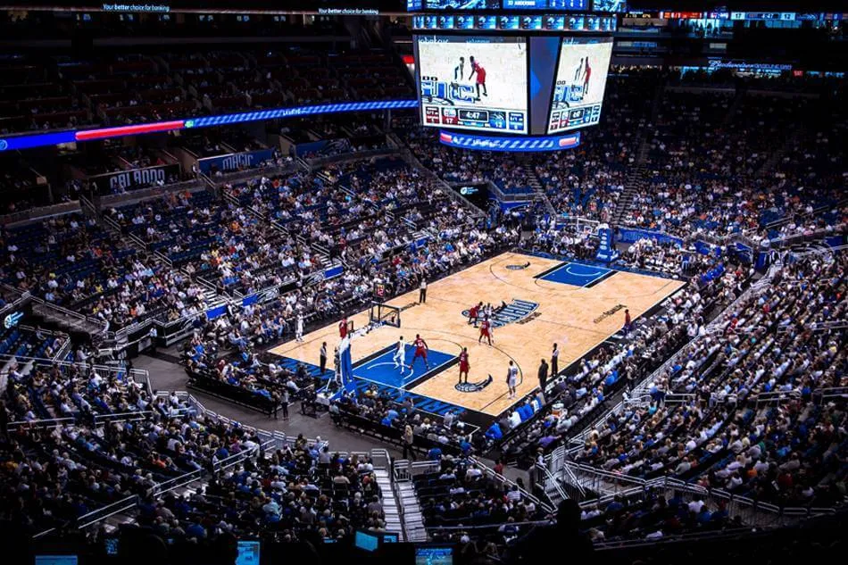

Orlando Magic - Fundada em 1989, a equipe possui uma base de fãs dedicada e passou a ser conhecida pelos seus momentos de destaque nos playoffs, com duas finais da NBA (1995 e 2009), mas nunca conquistou o título. O time tem se destacado por suas seleções no draft, como o número 1 Paolo Banchero e outros jovens talentos promissores.
Elenco - Paolo Banchero (#5), Franz Wagner (#22), Wendell Carter Jr. (#33), Markelle Fultz (#20), Jalen Suggs (#4), Gary Harris (#14), Jonathan Isaac (#1), Cole Anthony (#50), Mo Bamba (#11), Chuma Okeke (#3).
Títulos NBA - 0
Títulos Conferência - 0
Estádio - Amway Center (18.846)
